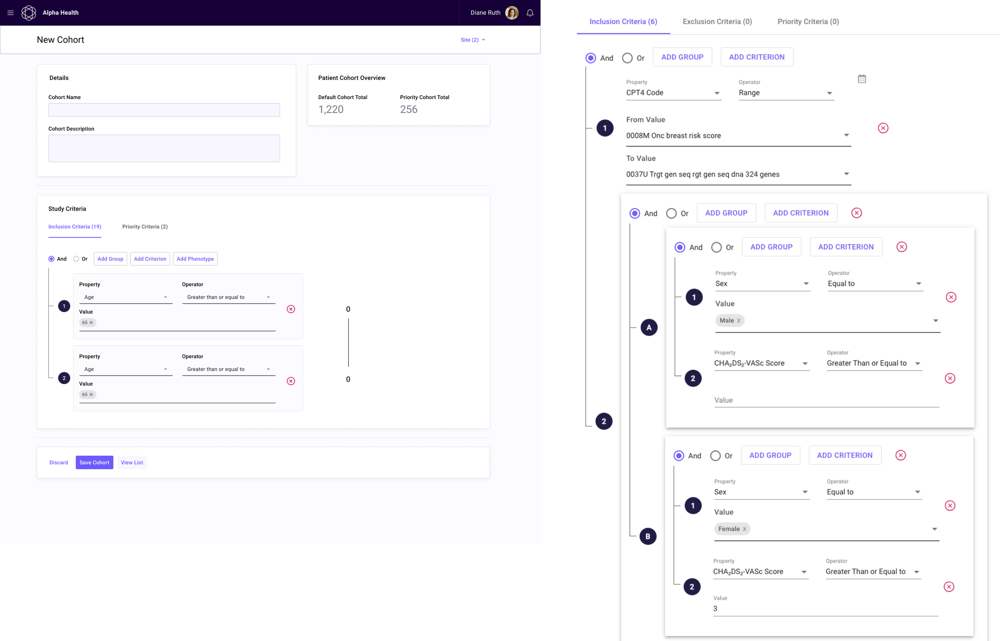
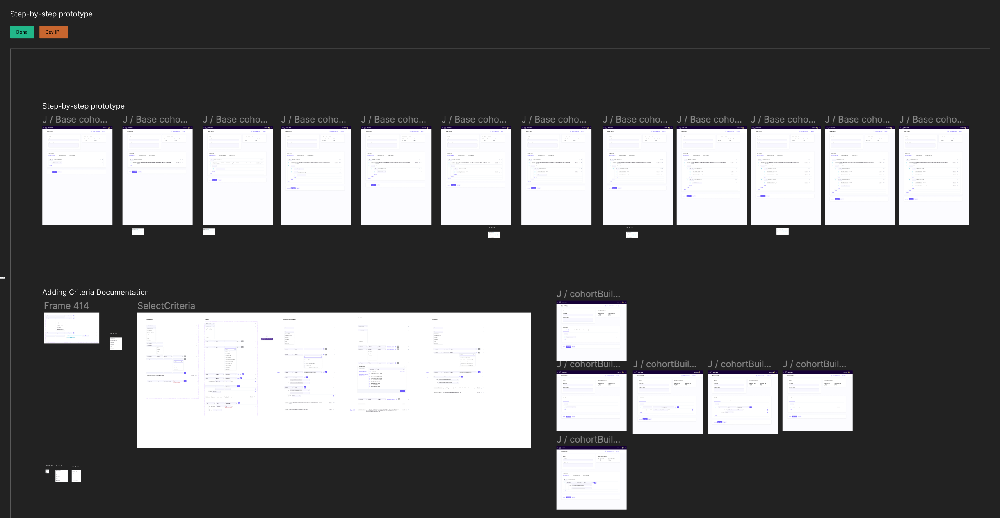
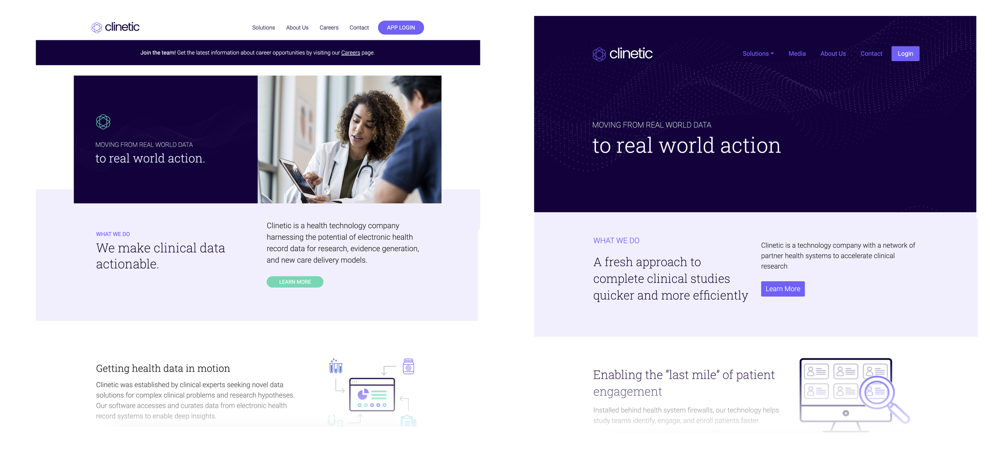
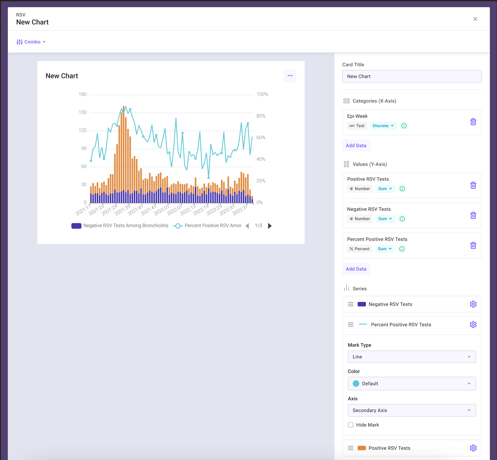

Clinetic Design Work


Overview
Clinetic is a small startup that supports:
- Clinical Research studies to find matching patients via health data and the ability to see them on a board to manage their screening, contacting, and consenting to a study.
- Provide pharmaceutical companies visibility into progress of studies via Patient board data visualizations, which they normally don’t have access to due to issues with HIPAA compliance.
- The ability to gain insights into the clinical data for study coordinators, including the ability to configure and create advanced data visualizations for key insights.
My Role
- Worked as the sole Senior UX Designer to support 8 developers (2 teams) with design of wireframes, final mockups, and documentation on upcoming features.
- Supported the business working with the Product Manager to understand and communicate the requirements into UI.
- Updated and maintained a Figma pattern library to maintain brand consistency.
Cohort Builder Redesign Dec 2022 – Feb 2023
A major overhaul of the Patient cohort builder was needed to support upcoming studies. A clinical study can have upward of 30 different inclusion and exclusion criteria from the patient’s health data (ex. a diagnosis of atrial fibrillation within the last 6 months and/or 3 visits to emergency medicine in the last year), we needed a builder that supported the complexity of these criteria as well as making it readable.
The Previous Builder
This is a view of the first version of the cohort builder that has been created as a way for the team to start creating cohorts behind the scenes. We needed to make sure it would be able to be in the hands of our users and not just our in-house people by the end of the redesign.

Early Designs
With a starting point and list of criteria for some upcoming studies I decided to jump right in.
The first stages included lots of wireframing on paper to wrap my head around the problem. Also seen below where some first stabs at different ways to show the complex criteria.


Feedback & Iteration
Once I had a rough prototype to show how this might function, I sat down with first my Product Manager and then the engineering teams to get thorough feedback. This included many rounds of corrections from small UI adjustments that would be difficult for the front end devs to accomplish to corrections on how the backend translates some of these criteria.
After these rounds of feedback we also did several internal test, a few of my coworkers had come from the clinical research to work for Clinetic so they were perfect to use as early user testers.
From those rounds of feedback it was determined:
- The designs were still a bit too busy and hard to scan through.
- An idea about reflecting how study criteria were laid out (having higher-level titles that described what was inside) was too complex and hard for the users to understand.
Final Iterations for Development
Through many iterations and feedback (the final iterations was version J), the final mockups and polished step-by-step prototypes were completed for developers.
🔍 Click to view each design in more detail.


A user is able to string together a criteria such as ‘Diagnosis of Tuberculosis in the last year’ or ‘Lab performed is triglycerides with a result of less than 150 mg/dL in the last month’ by searching and selection, once added it becomes a more readable sentence structure.
This allows the user to more easily view what could be 30-40 criteria for a study.

Post-Development
This has been released early-March 2023, so the first user was our Product Manager ensuring it worked for an upcoming study as Renown Health for cardiology. It was much smoother and easier to put together for her.
We are looking forward to users working on creating their own cohorts, but it will need to wait till we have more studies coming up in the future. Unfortunately, we haven’t been able to get full user feedback aside from ensuring that their complex needs will be met and we look forward to iterations once users get their hands on it.
Website Refresh / Branding Update

I took the current branding and did a refresh of the website. This included updates on the color palette to be more focused, using more modern layouts and shapes, and a rework on the structure.
Other Projects & Features
Below are a few additional features I helped design as part of my time at Clinetic.

Patient Cards: Matching Health Data
I worked with the data engineers as each new piece of available health data was integrated into our system — such as medications, labs, visits are care facilities, and diagnoses.
The mockups and screenshots of the platform below show how the matching health data was presented on the Patient card and the ability to configure what would show on the cards.


This feature had overwhelming customer success. It’s very difficult for them to interface with outside vendors due to HIPAA compliance, so having this information available, easy to parse, and easy to reference back to a Patient’s chart on their side was a great addition to their research study pipeline.